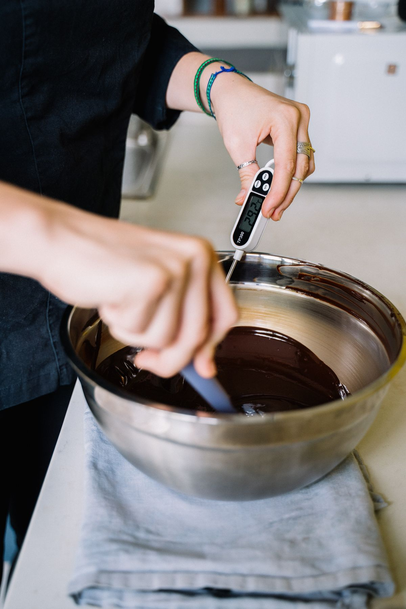

Bean-to-bar · single-origin bars, filled chocolates, cocoa showpieces
Chocolate is temperatures and percentages, written down.
Ana Beltrán buys whole cacao lots, roasts, grinds and tempers them in a Bristol railway arch, and builds structural showpieces to commission. Every number that decides how the chocolate tastes — the roast, the grind, the tempering curve, the percentage, the price — is printed somewhere on this site, where you can check it.

First, the numbers everything else obeys
Tempering is a curve, not a talent.
Cocoa butter can set into six crystal forms. Only one — Form V — gives a bar its snap, its gloss and its clean release from the mould. Tempering is how you coax the butter into that form: melt everything out, cool to start the right crystals, warm back to working temperature and hold it there. Miss the curve and the chocolate blooms, streaks or sets soft. The three curves below are the ones used in this room, and every figure the Explorer quotes further down comes straight from this table.
The tempering curves, drawn from the batch cards. Working ranges are given as ranges on purpose: bean lots differ, and the curve is adjusted per batch. The table below is the record the Explorer answers to.
Table 1 · Tempering — working ranges used in this room
| Chocolate | Melt | Cool to | Working | Why the range |
|---|---|---|---|---|
| Dark | 45–50 °C | 26–28 °C | 31–32 °C | No milk solids to scorch; the widest, most forgiving curve. |
| Milk | 40–45 °C | 25–27 °C | 29–30 °C | Milk fat softens the set, so every stage runs cooler. |
| White | 38–42 °C | 24–26 °C | 28–29 °C | No cacao solids at all; the most heat-sensitive of the three. |
The Bar & Batch Explorer
Pick a product. Read its record.
Choose a product class and a cacao band. The sheet updates with what the percentage actually means for that product, the making steps that matter, its tempering line from Table 1, its shelf life — and its price, which is the same price printed on the rate card below. One honest note before you start: a percentage is a recipe figure, not a quality score. It counts the share of the bar that came from the bean. Origin, fermentation and roast decide the flavour; the percentage only decides the balance.
1 · Product class
2 · Cacao band
Single-origin bar — 70–75%
70 g bar · one lot, one farm region
Retail £8.50 · 70 g bar
- What the % means
- Making steps
- Tempering
- Shelf life & storage
Prices, published
The rate card — and the arithmetic behind wholesale.
What moves a price here, in order: the lot (a kilo of well-fermented cacao can cost three times a commodity kilo), the handwork (filled pieces are piped one at a time), and only then the percentage. The card proves it — the 75% blend costs less than the 85% single-origin, because of the beans, not the number.
Table 2 · Rate card · retail, November 2026
| Product | Band | Retail |
|---|---|---|
| Single-origin bar · 70 g | 60–65% | £7.50 |
| Single-origin bar · 70 g | 70–75% | £8.50 |
| Single-origin bar · 70 g | 85% | £9.50 |
| Blend bar · 70 g | 62% | £6.50 |
| Blend bar · 70 g | 68% | £7.00 |
| Blend bar · 70 g | 75% | £7.50 |
| Filled selection · box of 12 | Dark shells · 70% | £24.00 |
| Filled selection · box of 12 | Milk shells · 45% | £22.00 |
| Filled selection · box of 12 | Mixed box · dark + milk | £23.00 |
| Showpiece · table piece | To 40 cm | from £450 |
| Showpiece · centrepiece | 40–80 cm | from £950 |
| Showpiece · architectural | 80 cm + | from £1,900 |
Wholesale calculator
Bars by the batch, costed in the open.
Printed tiers: 60–119 bars −10% · 120–299 bars −15% · 300+ bars −20% off the retail price. This is a pricing signal, not a quote — the confirmed price is the one on your invoice, and it has never differed from this arithmetic.
The shelf, as it stands
On the shelf now.
Register · November 2026
| Product | Origin / build | Cacao | Batch | Status | Price |
|---|---|---|---|---|---|
| Single-Origin Bar | Tanzania · Kilombero Valley | 72% | № 214 · 240 bars | In stock | £8.50 |
| Single-Origin Bar | Ecuador · Manabí | 85% | № 209 · 180 bars | In stock | £9.50 |
| House Blend № 3 | Ecuador + Madagascar | 68% | № 216 · 300 bars | In stock | £7.00 |
| The Winter Box · 12 filled | Dark shells | 70% | 90 boxes | Low stock | £24.00 |
| Salted Caramel & Hazelnut · 12 filled | Milk shells | 45% | 0 boxes | Sold out | £22.00 |
| Showpiece commissions | Built to order | — | Book open | 6-week lead | from £450 |
“We tasted five bars blind against our old supplier's. Ana's 72% won on the only test that matters — within a month, customers were asking for it by name, and the batch number on the wrapper means I can reorder the exact bar they mean.”
One way in, whichever you need.
Wholesale for cafés and delis from 60 bars · showpieces on a six-week lead · retail boxes while the register above says they exist. Every enquiry goes through the same short form — or write to ana@beltran-chocolate.example.